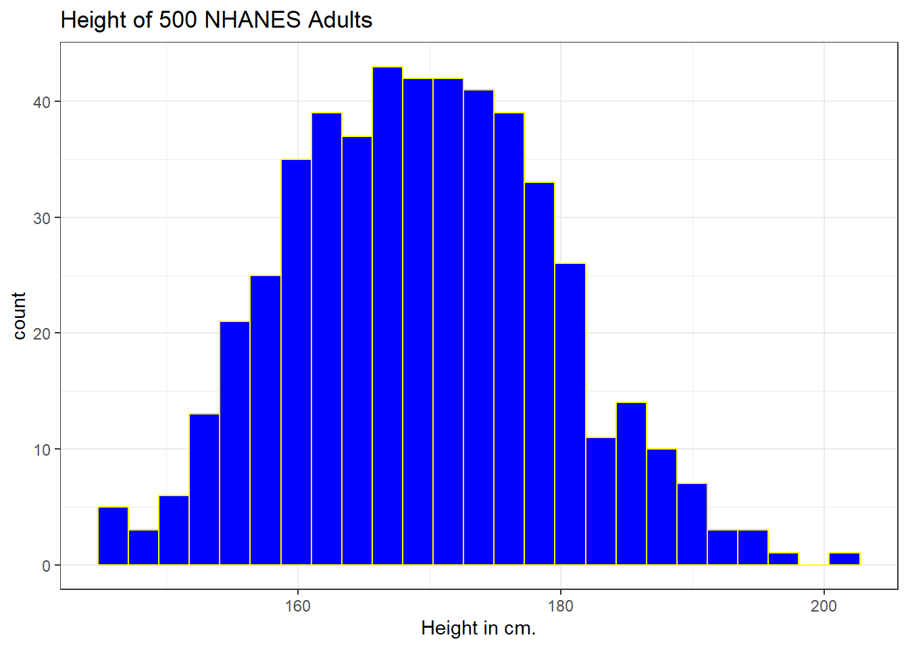

knitr::opts_chunk$set(comment = NA)
library(janitor)
library(knitr) ## for kable
library(tidyverse)
theme_set(theme_bw())6 Visualizing NHANES Data
6.1 Setup: Packages Used Here
6.2 Loading in the “Complete Cases” Sample
Let’s begin by loading into the nh_500cc data frame the information from the nh_adult500cc.Rds file we created in Section @ref(nh_cc).
nh_500cc <- read_rds("data/nh_adult500cc.Rds")One obvious hurdle we’ll avoid for the moment is what to do about missing data, since the nh_500cc data are specifically drawn from complete responses. Working with complete cases only can introduce bias to our estimates and visualizations, so it will be necessary in time to address what we should do when a complete-case analysis isn’t a good choice. We’ll return to this issue in a few chapters.
6.3 Distribution of Heights
What is the distribution of height in this new sample?
ggplot(data = nh_500cc, aes(x = Height)) +
geom_histogram() `stat_bin()` using `bins = 30`. Pick better value with `binwidth`.
We can do several things to clean this up.
- We’ll change the color of the lines for each bar of the histogram.
- We’ll change the fill inside each bar to make them stand out a bit more.
- We’ll add a title and relabel the horizontal (x) axis to include the units of measurement.
- We’ll avoid the warning by selecting a number of bins (we’ll use 25 here) into which we’ll group the heights before drawing the histogram.
ggplot(data = nh_500cc, aes(x = Height)) +
geom_histogram(bins = 25, col = "yellow", fill = "blue") +
labs(title = "Height of NHANES subjects ages 21-64",
x = "Height in cm.")
6.3.1 Changing a Histogram’s Fill and Color
The CWRU color guide (https://case.edu/umc/our-brand/visual-guidelines/) lists the HTML color schemes for CWRU blue and CWRU gray. Let’s match that color scheme. We will also change the bins for the histogram, to gather observations into groups of 2 cm. each, by specifying the width of the bins, rather than the number of bins.
cwru.blue <- '#0a304e'
cwru.gray <- '#626262'
ggplot(data = nh_500cc, aes(x = Height)) +
geom_histogram(binwidth = 2,
col = cwru.gray, fill = cwru.blue) +
labs(title = "Height of NHANES subjects ages 21-64",
x = "Height in cm.") 
6.3.2 Using a frequency polygon
A frequency polygon essentially smooths out the top of the histogram, and can also be used to show the distribution of Height.
ggplot(data = nh_500cc, aes(x = Height)) +
geom_freqpoly(bins = 20) +
labs(title = "Height of NHANES subjects ages 21-64",
x = "Height in cm.")
6.3.3 Using a dotplot
A dotplot can also be used to show the distribution of a variable like Height, and produces a somewhat more granular histogram, depending on the settings for binwidth and dotsize.
ggplot(data = nh_500cc, aes(x = Height)) +
geom_dotplot(dotsize = 0.75, binwidth = 1) +
scale_y_continuous(NULL, breaks = NULL) + # hide y axis
labs(title = "Height of NHANES subjects ages 21-64",
x = "Height in cm.")
6.4 Height and Sex
Let’s look again at the impact of a respondent’s sex on their height, but now within our sample of adults.
ggplot(data = nh_500cc,
aes(x = Sex, y = Height, color = Sex)) +
geom_point() +
labs(title = "Height by Sex for NHANES subjects ages 21-64",
y = "Height in cm.")
This plot isn’t so useful. We can improve things a little by jittering the points horizontally, so that the overlap is reduced.
ggplot(data = nh_500cc, aes(x = Sex, y = Height, color = Sex)) +
geom_jitter(width = 0.2) +
labs(title = "Height by Sex (jittered) for NHANES subjects ages 21-64",
y = "Height in cm.")
Perhaps it might be better to summarise the distribution in a different way. We might consider a boxplot of the data.
6.4.1 A Boxplot of Height by Sex
ggplot(data = nh_500cc, aes(x = Sex, y = Height, fill = Sex)) +
geom_boxplot() +
labs(title = "Boxplot of Height by Sex for NHANES subjects ages 21-64",
y = "Height in cm.")
The boxplot shows some summary statistics based on percentiles. The boxes in the middle of the line show the data values that include the middle half of the data once its been sorted. The 25th percentile (value that exceeds 1/4 of the data) is indicated by the bottom of the box, while the top of the box is located at the 75th percentile. The solid line inside the box indicates the median (also called the 50th percentile) of the Heights for that Sex.
6.4.2 Adding a violin plot
A boxplot is often supplemented with a violin plot to better show the shape of the distribution.
ggplot(data = nh_500cc, aes(x = Sex, y = Height, fill = Sex)) +
geom_violin() +
geom_boxplot(width = 0.3) +
labs(title = "Boxplot of Height by Sex for NHANES subjects ages 21-64",
y = "Height in cm.")
This usually works better if the boxes are given a different fill than the violins, as shown in the following figure.
ggplot(data = nh_500cc, aes(x = Sex, y = Height)) +
geom_violin(aes(fill = Sex)) +
geom_boxplot(width = 0.3) +
labs(title = "Boxplot of Height by Sex for NHANES subjects ages 21-64",
y = "Height in cm.")
We can also flip the boxplots on their side, using coord_flip().
ggplot(data = nh_500cc, aes(x = Sex, y = Height)) +
geom_violin() +
geom_boxplot(aes(fill = Sex), width = 0.3) +
labs(title = "Boxplot of Height by Sex for NHANES subjects ages 21-64",
y = "Height in cm.") +
coord_flip()
6.4.3 Histograms of Height by Sex
Or perhaps we’d like to see a pair of histograms?
ggplot(data = nh_500cc, aes(x = Height, fill = Sex)) +
geom_histogram(color = "white", bins = 20) +
labs(title = "Histogram of Height by Sex for NHANES subjects ages 21-64",
x = "Height in cm.") +
facet_wrap(~ Sex)
Can we redraw these histograms so that they are a little more comparable, and to get rid of the unnecessary legend?
ggplot(data = nh_500cc, aes(x = Height, fill = Sex)) +
geom_histogram(color = "white", bins = 20) +
labs(title = "Histogram of Height by Sex for NHANES subjects ages 21-64 (Revised)",
x = "Height in cm.") +
guides(fill = "none") +
facet_grid(Sex ~ .)
6.5 Looking at Pulse Rate
Let’s look at a different outcome, the pulse rate for our subjects.
Here’s a histogram, again with CWRU colors, for the pulse rates in our sample.
ggplot(data = nh_500cc, aes(x = Pulse)) +
geom_histogram(binwidth = 1,
fill = cwru.blue, col = cwru.gray) +
labs(title = "Histogram of Pulse Rate: NHANES subjects ages 21-64",
x = "Pulse Rate (beats per minute)")
Suppose we instead bin up groups of 5 beats per minute together as we plot the Pulse rates.
ggplot(data = nh_500cc, aes(x = Pulse)) +
geom_histogram(binwidth = 5,
fill = cwru.blue, col = cwru.gray) +
labs(title = "Histogram of Pulse Rate: NHANES subjects ages 21-64",
x = "Pulse Rate (beats per minute)")
Which is the more useful representation will depend a lot on what questions you’re trying to answer.
6.5.1 Pulse Rate and Physical Activity
We can also split up our data into groups based on whether the subjects are physically active. Let’s try a boxplot.
ggplot(data = nh_500cc,
aes(y = Pulse, x = PhysActive, fill = PhysActive)) +
geom_boxplot() +
labs(title = "Pulse Rate by Physical Activity Status for NHANES ages 21-64")
As an accompanying numerical summary, we might ask how many people fall into each of these PhysActive categories, and what is their “average” Pulse rate.
nh_500cc |>
group_by(PhysActive) |>
summarise(count = n(), mean(Pulse), median(Pulse)) |>
kable(digits = 2) | PhysActive | count | mean(Pulse) | median(Pulse) |
|---|---|---|---|
| No | 216 | 74.44 | 74 |
| Yes | 284 | 73.96 | 74 |
The kable(digits = 2) piece of this command tells R Markdown to generate a table with some attractive formatting, and rounding any decimals to two figures.
6.5.2 Pulse by Sleeping Trouble
ggplot(data = nh_500cc, aes(x = Pulse, fill = SleepTrouble)) +
geom_histogram(color = "white", bins = 20) +
labs(title = "Histogram of Pulse Rate by Sleep Trouble for NHANES subjects ages 21-64",
x = "Pulse Rate (beats per minute)") +
guides(fill = "none") +
facet_grid(SleepTrouble ~ ., labeller = "label_both")
How many people fall into each of these SleepTrouble categories, and what is their “average” Pulse rate?
nh_500cc |>
group_by(SleepTrouble) |>
summarise(count = n(), mean(Pulse), median(Pulse)) |>
kable(digits = 2) | SleepTrouble | count | mean(Pulse) | median(Pulse) |
|---|---|---|---|
| No | 380 | 73.45 | 73 |
| Yes | 120 | 76.43 | 76 |
6.5.3 Pulse and HealthGen
We can compare the distribution of Pulse rate across groups by the subject’s self-reported overall health (HealthGen), as well.
ggplot(data = nh_500cc, aes(x = HealthGen, y = Pulse, fill = HealthGen)) +
geom_boxplot() +
labs(title = "Pulse by Self-Reported Overall Health for NHANES ages 21-64",
x = "Self-Reported Overall Health", y = "Pulse Rate") +
guides(fill = "none") 
How many people fall into each of these HealthGen categories, and what is their “average” Pulse rate?
nh_500cc |>
group_by(HealthGen) |>
summarise(count = n(), mean(Pulse), median(Pulse)) |>
kable(digits = 2) | HealthGen | count | mean(Pulse) | median(Pulse) |
|---|---|---|---|
| Excellent | 52 | 72.08 | 72 |
| Vgood | 167 | 71.78 | 72 |
| Good | 204 | 75.22 | 74 |
| Fair | 65 | 76.55 | 76 |
| Poor | 12 | 85.50 | 82 |
6.5.4 Pulse Rate and Systolic Blood Pressure
ggplot(data = nh_500cc, aes(x = SBP, y = Pulse)) +
geom_point() +
geom_smooth(method = "loess", formula = y ~ x) +
labs(title = "Pulse Rate vs. SBP for NHANES subjects, ages 21-64")
6.5.5 Sleep Trouble vs. No Sleep Trouble?
Could we see whether subjects who have described SleepTrouble show different SBP-pulse rate patterns than the subjects who haven’t?
- Let’s try doing this by changing the shape and the color of the points based on
SleepTrouble.
ggplot(data = nh_500cc,
aes(x = SBP, y = Pulse,
color = SleepTrouble, shape = SleepTrouble)) +
geom_point() +
geom_smooth(method = "loess", formula = y ~ x) +
labs(title = "Pulse Rate vs. SBP for NHANES subjects, ages 21-64")
This plot might be easier to interpret if we faceted by SleepTrouble, as well.
ggplot(data = nh_500cc,
aes(x = SBP, y = Pulse,
color = SleepTrouble, shape = SleepTrouble)) +
geom_point() +
geom_smooth(method = "loess", formula = y ~ x) +
labs(title = "Pulse Rate vs. SBP for NHANES subjects, ages 21-64") +
facet_wrap(~ SleepTrouble, labeller = "label_both")
6.6 General Health Status
Here’s a Table of the General Health Status results. Again, this is a self-reported rating of each subject’s health on a five point scale (Excellent, Very Good, Good, Fair, Poor.)
nh_500cc |>
tabyl(HealthGen) HealthGen n percent
Excellent 52 0.104
Vgood 167 0.334
Good 204 0.408
Fair 65 0.130
Poor 12 0.024The HealthGen data are categorical, which means that summarizing them with averages isn’t as appealing as looking at percentages, proportions and rates. The tabyl function comes from the janitor package in R.
- I don’t actually like the title of
percenthere, as it’s really a proportion, but that can be adjusted, and we can add a total.
nh_500cc |>
tabyl(HealthGen) |>
adorn_totals() |>
adorn_pct_formatting() HealthGen n percent
Excellent 52 10.4%
Vgood 167 33.4%
Good 204 40.8%
Fair 65 13.0%
Poor 12 2.4%
Total 500 100.0%When working with an unordered categorical variable, like MaritalStatus, the same approach can work.
nh_500cc |>
tabyl(MaritalStatus) |>
adorn_totals() |>
adorn_pct_formatting() MaritalStatus n percent
Divorced 47 9.4%
LivePartner 46 9.2%
Married 256 51.2%
NeverMarried 125 25.0%
Separated 17 3.4%
Widowed 9 1.8%
Total 500 100.0%6.6.1 Bar Chart for Categorical Data
Usually, a bar chart is the best choice for graphing a variable made up of categories.
ggplot(data = nh_500cc, aes(x = HealthGen)) +
geom_bar()
There are lots of things we can do to make this plot fancier.
ggplot(data = nh_500cc, aes(x = HealthGen, fill = HealthGen)) +
geom_bar() +
guides(fill = "none") +
labs(x = "Self-Reported Health Status",
y = "Number of NHANES subjects",
title = "Self-Reported Health Status in NHANES subjects ages 21-64")
Or, we can really go crazy…
nh_500cc |>
count(HealthGen) |>
mutate(pct = round_half_up(prop.table(n) * 100, 1)) |>
ggplot(aes(x = HealthGen, y = pct, fill = HealthGen)) +
geom_bar(stat = "identity", position = "dodge") +
scale_fill_viridis_d() +
guides(fill = "none") +
geom_text(aes(y = pct + 1, # nudge above top of bar
label = paste0(pct, '%')), # prettify
position = position_dodge(width = .9),
size = 4) +
labs(x = "Self-Reported Health Status",
y = "Percentage of NHANES subjects",
title = "Self-Reported Health Status in NHANES subjects ages 21-64") +
theme_bw()
6.6.2 Two-Way Tables
We can create cross-classifications of two categorical variables (for example HealthGen and Smoke100), adding both row and column marginal totals, and compare subjects by Sex, as follows…
nh_500cc |>
tabyl(Smoke100, HealthGen) |>
adorn_totals(c("row", "col")) Smoke100 Excellent Vgood Good Fair Poor Total
No 44 108 105 29 5 291
Yes 8 59 99 36 7 209
Total 52 167 204 65 12 500If we like, we can make this look a little more polished with the knitr::kable function…
nh_500cc |>
tabyl(Smoke100, HealthGen) |>
adorn_totals(c("row", "col")) |>
knitr::kable()| Smoke100 | Excellent | Vgood | Good | Fair | Poor | Total |
|---|---|---|---|---|---|---|
| No | 44 | 108 | 105 | 29 | 5 | 291 |
| Yes | 8 | 59 | 99 | 36 | 7 | 209 |
| Total | 52 | 167 | 204 | 65 | 12 | 500 |
Or, we can get a complete cross-tabulation, including (in this case) the percentages of people within each of the two categories of Smoke100 that fall in each HealthGen category (percentages within each row) like this.
nh_500cc |>
tabyl(Smoke100, HealthGen) |>
adorn_totals("row") |>
adorn_percentages("row") |>
adorn_pct_formatting() |>
adorn_ns() |>
knitr::kable()| Smoke100 | Excellent | Vgood | Good | Fair | Poor |
|---|---|---|---|---|---|
| No | 15.1% (44) | 37.1% (108) | 36.1% (105) | 10.0% (29) | 1.7% (5) |
| Yes | 3.8% (8) | 28.2% (59) | 47.4% (99) | 17.2% (36) | 3.3% (7) |
| Total | 10.4% (52) | 33.4% (167) | 40.8% (204) | 13.0% (65) | 2.4% (12) |
And, if we wanted the column percentages, to determine which sex had the higher rate of each HealthGen status level, we can get that by changing the adorn_percentages to describe results at the column level:
nh_500cc |>
tabyl(Sex, HealthGen) |>
adorn_totals("col") |>
adorn_percentages("col") |>
adorn_pct_formatting() |>
adorn_ns() |>
knitr::kable()| Sex | Excellent | Vgood | Good | Fair | Poor | Total |
|---|---|---|---|---|---|---|
| female | 63.5% (33) | 44.3% (74) | 43.6% (89) | 47.7% (31) | 75.0% (9) | 47.2% (236) |
| male | 36.5% (19) | 55.7% (93) | 56.4% (115) | 52.3% (34) | 25.0% (3) | 52.8% (264) |
6.6.3 SBP by General Health Status
Let’s consider now the relationship between self-reported overall health and systolic blood pressure.
ggplot(data = nh_500cc, aes(x = HealthGen, y = SBP,
fill = HealthGen)) +
geom_boxplot() +
labs(title = "SBP by Health Status, Overall Health for NHANES ages 21-64",
y = "Systolic Blood Pressure",
x = "Self-Reported Overall Health") +
guides(fill = "none") 
We can see that not too many people self-identify with the “Poor” health category.
nh_500cc |>
group_by(HealthGen) |>
summarise(count = n(), mean(SBP), median(SBP)) |>
knitr::kable() | HealthGen | count | mean(SBP) | median(SBP) |
|---|---|---|---|
| Excellent | 52 | 113.9231 | 113 |
| Vgood | 167 | 117.5928 | 118 |
| Good | 204 | 121.5931 | 120 |
| Fair | 65 | 120.3846 | 118 |
| Poor | 12 | 122.8333 | 124 |
6.6.4 SBP by Physical Activity and General Health Status
We’ll build a panel of boxplots to try to understand the relationships between Systolic Blood Pressure, General Health Status and Physical Activity. Note the use of coord_flip to rotate the graph 90 degrees, and the use of labeller within facet_wrap to include both the name of the (Physical Activity) variable and its value.
ggplot(data = nh_500cc, aes(x = HealthGen, y = SBP, fill = HealthGen)) +
geom_boxplot() +
labs(title = "SBP by Health Status, Overall Health for NHANES ages 21-64",
y = "Systolic BP", x = "Self-Reported Overall Health") +
guides(fill = "none") +
facet_wrap(~ PhysActive, labeller = "label_both") +
coord_flip()
6.6.5 SBP by Sleep Trouble and General Health Status
Here’s a plot of faceted histograms, which might be used to address similar questions related to the relationship between Overall Health, Systolic Blood Pressure and whether someone has trouble sleeping.
ggplot(data = nh_500cc, aes(x = SBP, fill = HealthGen)) +
geom_histogram(color = "white", bins = 20) +
labs(title = "SBP by Overall Health and Sleep Trouble for NHANES ages 21-64",
x = "Systolic BP") +
guides(fill = "none") +
facet_grid(SleepTrouble ~ HealthGen, labeller = "label_both")
6.7 Conclusions
This is just a small piece of the toolbox for visualizations that we’ll create in this class. Many additional tools are on the way, but the main idea won’t change. Using the ggplot2 package, we can accomplish several critical tasks in creating a visualization, including:
- Identifying (and labeling) the axes and titles
- Identifying a type of
geomto use, like a point, bar or histogram - Changing fill, color, shape, size to facilitate comparisons
- Building “small multiples” of plots with faceting
Good data visualizations make it easy to see the data, and ggplot2’s tools make it relatively difficult to make a really bad graph.